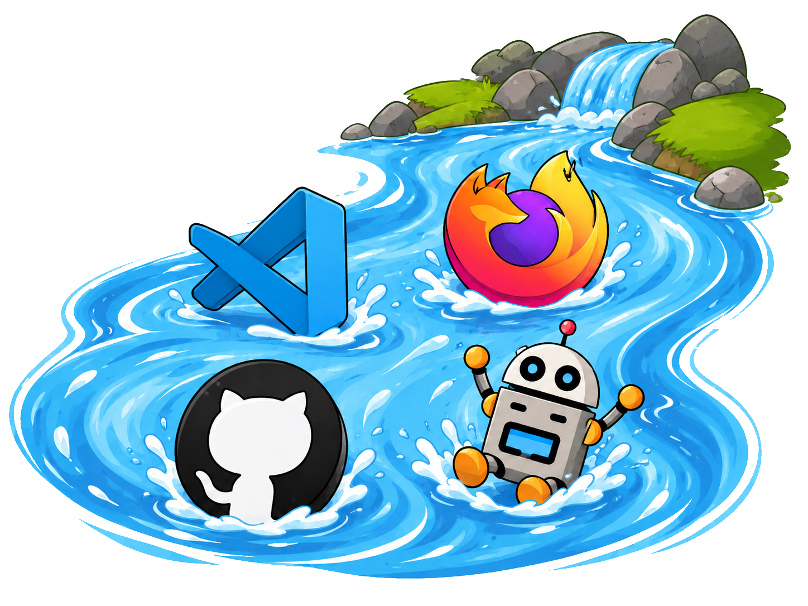

⚙️ VIBE CODING 🌊 : Workflow intégré du futur avec Github, VSCode, Claude 🔥🔥🔥

Vidéo YouTube
Chapitres
Liens utiles
Transcript complet
Introduction
0:00 Bonjour à toutes et à tous et bienvenue sur Agile Tool Kit. Aujourd'hui dans cette vidéo, je vais vous présenter un workflow de vibe coding, donc un
0:07 processus, un procédé et des outillages que j'utilise pour faire du vibe coding.
0:13 Et ce workflow, il va s'appuyer sur la plateforme GitHub. Donc c'est assez spécifique. Si vous n'utilisez pas GitHub, vous ne pourrez pas le le
0:21 reproduire. Alors, on peut le reproduire dans d'autres plateformes, mais ça sera un peu différent. Donc là, moi je me base sur la plateforme GitHub. Et pourquoi je vous présente ça ? parce que
0:28 ce Workflow, je pense qu'il va être qu'il est représentatif du futur de l'outillage de développement, donc
0:36 développer à l'intérieur de plateformes tout intégré avec de l'IA, avec du DevOps. Donc ça ça va être un workflow assez simple hein que vous pourrez
0:44 reproduire chez vous et que j'ai déjà plus ou moins montré sur la chaîne par morceau. Mais euh ça préfigure le futur
0:51 du développement des des pratiques de développement en terme de plateforme d'ID d'utilisation
0:59 de l'IA. Donc c'est quelque chose que j'utilise souvent. Donc je vais vous l'expliquer. Ici vous avez les icônes avec de tous les outils. Donc GitHub, VS
1:08 Code. Ça c'est Lia, c'est une icône que j'utilise pour représenter Lia et tout va se faire dans un navigateur. Donc là, j'ai pris l'icône de Firefox.
Présentation du Workflow
1:16 Donc je vous explique le le workflow,
1:18 c'est très simple. Donc comme je l'ai dit, on utilise la plateforme GitHub.
1:21 Avec l'outil GitHub Codespace, on va pouvoir instancier à l'intérieur de la plateforme GitHub via un conteneur qui
1:29 sera accessible directement en web. on va pouvoir instancier euh une instance de Visual Studio Code. Donc ça va être un environnement de développement où on peut utiliser VS Code. Voilà,
1:39 directement à l'intérieur de VS Code, VS Code va communiquer avec différentes IA donc via tout un outillage autour de
1:47 l'IA. Donc moi je représente l'IA par ce robot dans mes vidéos et j'utilise personnellement principalement cloud et
1:55 chat GPT. Donc on va utiliser les modèles de de cloud et de chat GPT, donc entre PIC et open mais ça marche avec d'autres certainement. Et ensuite il y a
2:04 la fonctionnalité de G Pages. On va déployer tout ça automatiquement encore.
2:09 On va déployer le site directement sur GitHub et il sera accessible immédiatement. Et donc grâce à tout ce workflow, vous allez voir que c'est extrêmement facile de développer des
2:17 fonctionnalités sans même rien installer sur un navigateur sur votre ordinateur.
2:21 Vous pouvez y accéder depuis n'importe quel ordinateur. Il vous suffit de vous connecter à GitHub. Donc vous allez voir à quel point c'est euh c'est euh c'est
2:29 fluide et facile. Enfin normalement si tout marche bien. Donc pour et sinon pour rappel, si vous voulez plus de détails, je vais pas tout expliquer.
2:35 Donc là j'ai donné quasiment toutes les explications mais pour avoir plus de détails sur comment faire très concrètement, vous avez une vidéo sur
2:43 Gitup Code Spaces ici que j'avais fait il y a quelques mois et une autre vidéo sur l'hébergement de site web sur GitHub
2:49 Pages donc et ici. Donc je vous mettrai bien sûr les liens en description, mais maintenant on va passer à la démo. Alors avant la démo, je vous ai produit ce
2:57 slide he qui est un peu la même chose que ce que j'ai expliqué juste avant pour vous donner une liste d'étapes si jamais vous voulez le reproduire par vous-même, faire la même chose par
3:06 vous-même. Donc je j'ai mis ici les étapes. Donc il y a quand même des prérequis. Donc je considère que vous avez déjà un projet existant dans
3:14 GitHub. Ensuite l'autre prérequis c'est que ce petit workflow très simple qui s'appuie sur l'A. Alors euh moi je
3:22 l'utilise pour des applications très particulières que j'appelle des gadgets.
3:26 Donc c'est des petites applications HTML, CSS, JavaScript qui font moins de 1000 lignes de code. Donc c'est quand même assez particulier. Je ne ce work
3:35 est approprié pour les petits projets simples comme ce que je présente sur la chaîne. Probablement, il serait pas adapté euh pour des grands projets. Euh
3:43 donc ou du moins, il faudrait modifier beaucoup de choses si on veut intervenir sur de grands projets. Donc euh ce que je vous présente, c'est c'est reproductible directement sur des tout
3:50 petits projets, des petits sites web perso, des petites applications, des scripts, peut-être pas sur des grands projets. Et là aussi donc des workflow,
3:57 il y en a plein. Des workflow de travail, de programmation, des process,
4:02 il y en a vraiment beaucoup. Il y en a une infinité si on veut. Moi je vous présente quelque chose que moi j'utilise, que je trouve intéressant
4:09 intéressant de part l'intégration de tous les outils et la facilité d'utilisation. Mais bien sûr, c'est pas un truc c'est pas quelque chose
4:18 d'universel. Donc moi, je vous présente ce que j'utilise en mode tool kit. Gile Tool Kid, c'est le titre de la chaîne.
4:24 Je vous donne mes trucs et astuces à moi pour vous inspirer surtout pour que vous appreniez des possibilité avec toutes ces nouvelles plateformes avec Lia notamment et cetera. Mais bien sûr,
4:35 c'est ça rien de de universel hein. Donc voilà, donc c'est fini pour les explications. Donc maintenant, on va respecter toutes ces étapes. J'espère que je vais en oublier aucune. Donc
Présentation de l'exemple : site de templates de rétro et de la fonctionnalité à développer
4:43 maintenant, on va passer à la partie démo. Donc comme je vous ai dit hein, il faut je pars du principe que vous avez déjà une application disponible. On va
4:50 pas repartir de zéro. On fera certainement d'autres vidéos où on repart de zéro. Et donc là, vous avez le site web où je vous propose mes templates de rétrospective, hein. Sur la
4:58 chaîne, on produit des template de rétrospective agile et je mets tous les templ sur bah sur ce site. Euh et ce siteel, il fonctionne grâce à une petite
5:07 application HTMLCC JavaScript que j'ai développé avec Lia. Donc je vous mettrai aussi des liens en description de la chaîne à ce sujet, au sujet de de ce
5:14 site. Mais euh donc ce qu'on va faire, c'est qu'on va rajouter une fonctionnalité à ce site web.
5:21 Donc cette fonctionnalité, quelle est-elle ? Et bien c'est très simple.
5:24 Vous voyez ici que quand je clique sur Alors déjà, c'est bizarre parce que quand je clique sur une image, ça affiche l'image d'avant parfois. Voilà. Non, ben non, là ça marche. Bon bref,
5:33 donc quand je clique sur une image, euh je voudrais pouvoir visualiser h avec des flèches sur la gauche et sur la droite les rétrospectives suivantes d'un
5:41 même thème. Mais là, quand je clique à côté, je ne peux pas aller euh je ne peux pas aller à la rétrospective suivante. Donc bon, c'est c'est assez basique, hein, mais c'est juste pour
5:48 l'exemple. C'est la seule fonctionnalité qu'on va développer. On pourrait certainement faire plein d'améliorations, mais là le but c'est de vous montrer comment on peut faire avec euh ces outils euh intégrés à Gitom.
Démo du workflow : développement de la fonctionnalité
5:57 Donc ici euh le euh c'est le dépôt Git.
6:02 Donc euh vous le voyez donc il y a tous les commits passés. Donc la il y a un commit bien souvent à chaque fois que j'ajoute des rétros, je rajoute les images de rétro directement là-dedans.
6:11 Donc là la dernière rétro, c'était la rétro Topche Chef. Donc alors ce n'est pas là que je voulais cliquer. Comment on revient ? Alors je suis vraiment pas
6:18 très doué. Voilà. Donc là, on va cliquer,
6:23 on va créer un GUP Code Space pour développer directement dans la plateforme GitHub. Donc comment ça se passe GitUP Code Space ? Ça se passe ici dans code. Alors je sais pas pourquoi c'est aussi lent. Normalement, j'ai une
6:31 bonne connexion internet. C'est peut-être GitHub qui est qui est lent.
6:35 Donc euh c'est donc ici par défaut quand vous cliquez ici, vous avez bah tout ce qu'il faut pour cloner le dépôt hein. Donc c'est vraiment dans la partie code,
6:43 on peut le cloner sur son ordinateur en local et développer en local sur euh dans VS Code. Et nous ce qu'on va faire, c'est développer dans le cloud GitHub.
6:51 Donc vous avez vu où je clique local codepace. Donc Code Space c'est un environnement de développement. Donc très concrètement va être une machine
6:59 virtuelle avec des conturs de Docker dans le cloud de GitHub, dans les infrastructures de Github.
7:08 Euh donc là, je viens de cliquer, ça instancie donc une machine virtuelle et ou un conteneur. En fait, je sais pas exactement comment ça marche
7:17 concrètement. Et on a un VS Code qui est en train de se charger. Alors, il faut attendre un petit peu longtemps le temps que ça se charge. Ici, vous avez setting
7:24 up Remote Connection. D'ailleurs, je vais mettre ma tête ici pour que ça soit moins embêtant pour que vous puissiez voir la partie en haut à gauche. Voilà,
7:34 donc c'est en train de charger bah tout un environnement de développement et là j'ai l'impression que c'est terminé.
7:39 Non, c'est pas encore terminé parce qu'on a le terminal qui se charge. Faut attendre un petit peu. Voilà. Et je crois que par défaut, il charge le Redmi. Donc là, on voit que c'est pas
7:47 encore chargé. On voit qu'on a Visual Studio Code avec une partie gauche ici où je retrouve tous mes fichiers de mon dépôt. Ici la partie centrale où on peut
7:55 coder. En bas le terminal et ce qui est intéressant, ce qui me plaît, ce qui va nous intéresser ici, c'est la partie IA qui est déjà ici et qui est déjà disponible.
8:05 Alors voilà, il a chargé le Rytmi. Bon bah ça ça nous intéresse pas plus que ça. Et là on a tous les fichiers. Donc il y a beaucoup de fichiers parce que
8:12 c'est classé par rétro. Donc il y a beaucoup de fichiers images. Donc là vous voyez une rétrospective sur le foot ici, une rétrospective de Noël. Mais ça
8:19 nous intéresse pas tellement parce que nous ce qui nous intéresse, c'est la partie codage. Donc je vais fermer ça.
8:24 Et le site, il est généré avec ce fichier generate index.php, ce script en PHP. Alors moi je fais beaucoup de PHP,
8:31 c'est mon langage de prédilection, on va dire en ce moment. Donc ce que fait ce ce générateur de site, et bien il parcourt tous les dossiers euh de
8:39 manière à générer une page HTML ici qui va présenter toutes les images comme ceci sur ce site dans une seule page unique.
8:47 Bon voilà, donc je vous mettrai en description une vidéo qui qui parle de ce site, mais maintenant bah on va attaquer directement la démo,
8:55 c'est-à-dire qu'on va programmer avec Lia directement dans ce Gitup Code Space. Donc là, si je reprends ça, créer le GitHub code space, c'est fait. Donc là, je vais rayer texte. Hop, barrer.
9:07 Demander à Lia de coder une fonctionnalité. Donc on va le faire.
9:10 Oups, mince, je l'ai fermé. Je suis vraiment très maladroit mais tant pis,
9:14 va falloir attendre. Alors voilà, c'est l'effet des mots. H bon, je suis désolé de ma maladresse. Je vous fais attendre encore un petit peu. Non, bah c'est bon,
9:23 ça se recharge très vite parce que bah je sais pas, c'était en cash peut-être.
9:27 Alors ici, est-ce qu'on peut augmenter la taille de ça ? Non, j'ai pas l'impression.
9:34 Alors, chose supplémentaire, je vais utiliser le speech to text de Windows pour coder. Donc, c'est-à-dire qu'on va parler, vous allez voir, ça va être
9:41 encore plus fluide. Donc, on va vraiment rien, on va même pas taper au clavier.
9:50 Alors euh avant avant de parler avant d'utiliser le speech to text, c'est Windows touche Windows plus H dans Windows. Ça ouvre le speech to text
9:58 comme ça et ça écrit. Alors voilà, on voit que on voit que là ça écrit à l'endroit où j'avais le curseur. Donc c'est ici. Donc c'est pas ici que je vais écrire parce qu'on est dans un
10:06 terminal. J'espère que vous voyez bien l'écran. Bon faut zoomer. Je je zoome pas davantage parce que sinon ça sera inutilisable pour moi. Donc je fais
10:13 Windows H. Je parle, je demande ma fonctionnalité et euh LIA va euh le la coder, j'espère.
10:20 Euh je voudrais euh ajouter une nouvelle fonctionnalité à mon site. Euh pour cela, euh je veux que tu modifies generate inindex.php,
10:32 euh le fichier de génération de index.html.
10:37 Euh je voudrais que le site index.html image du généré euh permettent euh d'avoir
10:45 lorsque lorsqu'une image est affichée euh je voudrais que on ait sur la gauche et sur la droite des flèches
10:54 qui permettent d'aller à l'image suivante ou l'image précédente de la catégorie dans laquelle elle est.
11:05 Donc la catégorie c'est un type de rétrospective.
11:09 Donc si une catégorie n'a qu'une seule image, alors pas besoin d'avoir les flèches précédentes et suivantes. Si on
11:16 est sur la première image, alors il y a une flèche sur la droite mais pas sur la gauche. Si on est si on est sur la
11:25 dernière image, il y a une flèche sur la gauche mais pas sur la droite. Si on clique ailleurs que dans la zone de flèche ou ailleurs que sur l'image,
11:37 alors ça quitte le mode affichage de l'image et ça revient sur le site normal.
11:42 Euh et en plus, assure-toi que autour des flèches, il y a une zone cliquable assez grande pour que quand on clique
11:51 un peu à côté de la flèche, ça fasse quand même suivant et précédent, hein. Euh voilà.
11:58 Donc code bien, essaie d'analyser cette fonctionnalité et code bien. Donc là, voilà, j'ai fini de parler,
12:07 c'est ma spécification. Alors euh le speech to text de Windows est quand même beaucoup moins fort que celui de chat GPT. Donc il faut se relire. Je voudrais
12:15 ajouter une nouvelle fonctionnalité à mon site. Pour cela, je veux que tu modifies generate index.php. Voilà. Donc là, on va lui on va l'aider un peu.
12:25 Voilà. Euh le fichier de génération,
12:30 je mettre une virgule virgule le fichier de génération de index.html. Donc là, il faut aussi l'aider un petit peu à
12:38 comprendre. Euh point je voudrais, on peut même sauter des lignes. Alors,
12:44 c'est peut-être pas utile pour les mais c'est utile pour nous. Je voudrais que le site index.hthtml. Donc là, il faut l'aider un petit peu.
12:51 Alors, si on a si on avait le speech to text de euh de chat GPT, je suis sûr que ça serait parfait. On l'a testé dans une vidéo. D'ailleurs, je vous mettrai le
12:59 lien aussi en description. Euh, je voudrais que le site index.hthtml généré permettant permettent d'avoir
13:08 permettent d'avoir lorsque lorsqu'on lorsqu'une image est affichée. Voilà.
13:13 Bon, c'était de l'improvisation donc j'ai pas lu un texte. Donc forcément,
13:17 c'est pas parfait. Lorsqu'une image est affichée, je voudrais euh que on ait
13:25 sur la gauche et sur la droite des flèches qui permettent d'aller à l'image suivante ou l'image précédente de la catégorie dans laquelle elle est.
13:34 Point. Euh voilà, on va mettre un petit peu de d'espace là-dedans. Euh donc la catégorie c'est un type de rétrospective.
13:41 Donc si on veut donc si une catégorie n'a qu'une seule image, alors pas besoin
13:49 d'avoir les flèches précédentes et suivantes. Si quoi ? On va on va pour les différentes clauses de si on va
13:58 voilà, on va on va séparer. Si on est sur la première image, alors il y a une flèche sur la droite mais pas sur la gauche.
14:05 Voilà. Si on est sur la dernière image,
14:10 il y a une flèche sur la gauche mais pas sur la droite. J'espère que je me suis pas trompé avec ma gauche et ma droite.
14:13 C'est très difficile de de dire des choses, de se filmer en même temps et cetera. Si on clique ailleurs que dans la zone de flèche ou ailleurs que sur
14:21 l'image, alors ça quitte le mode affichage de l'image et ça revient sur le site normal. Et en plus, assure-toi
14:30 que autour des flèches, il y a une il y a une zone cliquable assez grande pour que quand on clique sur que quand on
14:37 clique un peu à côté de la flèche, ça fasse quand même suivant et précédent.
14:42 Euh pourquoi j'ai dit non ? Non. Euh voilà.
14:48 Donc code bien. Je sais pas si c'est utile mais on va le laisser.
14:53 Euh essaye d'analyser cette fonctionnalité euh et code bien
15:00 et code bien. Voilà. Bon bah ça m'a l'air pas mal. Et bien je vais cliquer sur ici. Voilà envoyer. Donc là on est en mode agent hein pour que ça fasse
15:08 tout un tas de choses et notamment que ça modifie le code. Voilà. H Allez hop on on clique sur envoyer.
15:16 Alors là j'espère que ça va marcher. Je n'en suis pas sûr. Pourquoi je n'en suis pas sûr ? Parce que donc là si je clique
15:24 sur automatique, on normalement on est censé voir les différents types d'IA. Donc chat GPT, Cloud et cetera. Voilà,
15:30 là ça s'affiche Cloud Sony 4.6, JPT 4.5 mais Gitubilote a changé sa tarification
15:37 il y a quelques jours. Alors j'ai l'abonnement payant. Donc même si vous êtes en gratuit, si vous êtes en full gratuit, vous aurez vous pourrez faire ça, mais vous serez limité. Vous aurez
15:46 les modèles de moins bonne qualité, vous serez limité par le nombre de de requêtes que vous pouvez faire. Là, je paye copilote pro à 10 dollars par mois.
15:55 Donc avant avant la mise à jour de tarification, on avait accès à Cloudopus 4.7. Maintenant, on n'y a plus accès.
16:02 Donc pour y avoir accès, faut payer 49 dollars par mois. Donc bon benah, on n'y a plus accès en plus. Donc bon, voilà,
16:09 la mise à jour de tarification nous donne beaucoup moins de choses. Donc j'ai pas voulu payer 49 dollars par mois. Donc, je n'ai accès qu'à Cloud Son 4. Euh, où j'ai pété 4.5. qu'en fait on
16:17 a accès à plein d'autres modèles qui sont ici et puis il y en a encore d'autres même qui sont pas affichés ici mais c'est pas les modèles les plus puissants he Cloud Opus 4.6 4.7 et
16:25 cetera sont extrêmement puissants. Donc vraiment beaucoup beaucoup plus puissants que que d'autres modèles. Donc voilà. Alors là il me demande de
16:33 refactoriser, bon de conserver. Alors là je sais pas, je vais pas cliquer, je vais le laisser faire. On pourra on peut le laisser faire et puis on cliquera sur conserver à la fin si ça nous va bien.
16:43 On va pas relire tellement le code, on va juste tester parce que là on est en mode vibe coding vidéo sans trop relire.
16:50 Alors j'espère qu'il va y arriver du premier coup. Je suis certain que Cloud O+ 4.6 pour une telle fonctionnalité arrive du premier coup et que ça sera
16:58 parfait. Pour Claude Sonnet, je n'en suis pas certain. Donc bon bah si jamais c'est trop mauvais, peut-être que je
17:05 retournerai la vidéo. Donc voilà. Donc là, apparemment, il a il a travaillé.
17:09 Donc il nous demande de faire générer index.p php pour générer un nouvel index. Donc voilà, il est en train d'évaluer le résultat. Donc ça c'est une
17:18 des particularités hein de de tous ces environnements de développement qui utilisent l'IA. Ils ne font pas que poser des questions simples un modèle.
17:27 Il y a tout un tout un tas de workflow, de mécanismes et d'outils qui peut être utilisé par
17:35 l'environnement pour poser des questions à un modèle, pour faire des tests, pour visualiser le résultat et cetera. Donc c'est ce qui rend ces I assez
17:42 intéressantes. Alors bien sûr là c'est un petit peu lent, c'est un petit peu coûteux parce que j'ai la version à 10 dollars. À 49 dollars, j'imagine que ça
17:50 irait plus vite et surtout on utiliserait Claude Opus qui nous fait des résultats parfaits dès le premier coup pour ce genre de de petites modifications.
17:58 Euh et voilà, mais bien sûr, c'est un coût, c'est pour ça que c'est payant. Si tu veux, je peux ensuite ajouter un petit indicateur visuel. Bon,
18:04 apparemment, il a terminé. Donc maintenant, je vais lui demander de servir le site pour afficher le site parce que là, on est toujours dans notre environnement de développement euh à
18:12 l'intérieur euh de euh à l'intérieur de notre GitUP Codepace. Donc si je vais ici sur le vrai site, ce n'est toujours pas euh à jour hein, je n'ai pas la
18:20 nouvelle fonctionnalité, je n'ai pas de flèche mais c'est normal. Donc je vais lui demander de servir le site dans l'environnement de développement. Donc là, il va me donner une petite commande PHP. Voilà. Et peut-être qu'il va l'exécuter directement de lui-même.
18:30 Traitement en cours. Donc il peut carrément exécuter des commandes dans le terminal. Bon, en fait, apparemment, il y arrive pas. Donc, je n'ai pas pu lancer. Donc, il me dit de lancer la
18:37 commande. Bah, c'est pas grave, je la lance moi-même. Voilà. Alors, sachant que j'ai rien configuré, hein. Si on a un environnement de développement qu'on
18:44 configure et cetera, bah ça ça pourrait être beaucoup mieux, hein, certainement.
18:48 Donc là, je vais zoomer pour que vous voyez bien. Donc là, on retrouve nos templates de rétro. Par exemple, on a la catégorie 4L, catégorie bingo, démo,
18:56 carte postale, foot, Halloween. Bien. Et bien, je vais cliquer sur une démo.
18:59 Est-ce que j'ai les flèches à gauche et à droite ? Oui, j'ai les flèches. Alors, je sais pas si vous le voyez à la vidéo,
19:04 mais il y a un petit rond autour des flèches. Donc là, si je clique, ça va avant. Voilà, bah c'est très bien.
19:09 Voilà, je vois mes rétros. Donc, si je vais sur la dernière démo,
19:14 il y a plus de flèche. Donc ici, c'est normal. Et donc, si je clique ailleurs,
19:17 ça quitte. Excellent. Si je clique ici sur une autre, sur la première, bah voilà, ça quitte. Si je clique sur une
19:25 flèche, ça change. Voilà. Bah, c'est parfait. C'est exactement ce que je voulais. Donc ça a programmé du premier coup. Euh donc je suis content. Voilà.
19:34 Bien joué Claude Sonnet.
19:37 Ah voilà. Ici on a qu'une seule on a qu'une seule rétro pour la rétro space rocket que j'ai inventé. Donc on a qu'un seul template donc on a pas de flèche
19:44 sur le côté. Et si je clique à côté et bien bah ça me sort. Là pour speedbat on en a plusieurs. Donc j'ai les flèches à gauche et à droite. Donc ici j'ai pas de
19:51 flèche parce que c'est la première. Ici hop je peux aller jusqu'à la fin. Donc c'est un petit peu lent parce que ça charge à chaque fois. Et voilà. Bon ben
19:59 c'est parfait. Donc euh l'étape demander à LIA de coder cette fonctionnalité, on l'a fait. Hop, texte, je barre. Alors bon, ça c'est pas nécessaire mais bon,
20:09 vous voyez queon suit la méthode. Donc là, ça fait 23 minutes que je tourne mais je donne pas mal d'explications. On a tout instancié. En plus, j'ai été maladroit. Donc voilà. Alors maintenant,
Commit, push et déploiement de la fonctionnalité
20:17 je vais faire Windows H. Je voudrais que tu fasses un commit et un push directement sur la branche main de cette fonctionnalité.
20:30 Et voilà. Donc là, vous voyez, je voudrais que tu fasses un commité un pouche directement sur la branche main de cette fonctionnalité. Et bien, ça marche. Je suis même pas obligé de cliquer sur conserver. Bon, je peux
20:38 cliquer sur conserver, hein. Euh mais voilà,
20:43 on est c'est même pas obligé pour faire le commité le push. Alors là, on va s'ouvrir un autre terminal en plus du serveur
20:51 parce que là, le premier terminal est occupé avec la commande de serveur webp-S.
20:56 Donc on va en utiliser un deuxième. Bon bah là voilà a fait tout un tas de trucs. Tu as écrit là Ah oui donc ça
21:04 écrit mail mais le repos est actuellement sur ma main. Voilà. Bon alors c'est marrant parce que voilà il
21:12 il me dit OK bon alors il nous donne les commandes donc elles sont ici. Il peut pas les faire directement dans le terminal. Bon,
21:19 je sais pas pourquoi j'ai pas étudié ni rien configuré mais euh ici on peut cliquer sur euh cette petite ligne pour le mettre directement dans le terminal.
21:27 Git ad generate inindex.html gitcmit.
21:30 Ajoute navigation précédente suivante dans la live box par catégorie guit push origine main. Allez hop je clique et
21:37 voilà et donc ça l'a fait. Donc là normalement si je vais ici je devrais retrouver mon commit. Donc si je clique
21:46 ici sur commit et voilà, ajoute navigation précédente suivante dans la lightb.
21:53 Donc la light box c'est le fait que on met en avant une image par-dessus le site par catégorie. Donc c'est très
22:00 bien, c'est ce que je voulais. Mais comme le site est hébergé sur GitUP Code Space, c'est en train de déployer automatiquement de manière à ce que je
22:08 puisse l'avoir ici sur ma version de prod que vous voyez ici. Alors pourquoi j'ai ça ? Je l'enlève. Donc là ici on voit qu'on ne l'a pas encore mais dans
22:17 un instant quand je rafraîchirai parce que là ici vous voyez qu'il y a un déploiement donc c'estécrit pending.
22:21 Donc je clique, on va aller euh dans l'interface de déploiement qui est ici.
22:25 Donc ça si vous voulez en savoir plus et comprendre un peu plus tout ce mécanisme, je vous invite à aller voir cette vidéo là où j'ai tout expliqué. Là je vais pas expliquer dans cette vidéo
22:33 parce que bah ça serait trop long. Bon je pourrais tout expliquer dans une vidéo très longue mais mais voilà. Donc à chaque fois en fait sur chaque fois
22:40 que que je fais des vidéos, je fais très souvent référence à des vidéos précédentes. Ce n'est pas pour faire des vues, ce n'est pas pour vous faire voir
22:47 des vidéos. Le but c'est parce que toute cette chaîne Jile Tool Kit, donc ma chaîne YouTube, c'est un peu comme une énorme chaîne de formation. Donc mon but, c'est que les gens s'approprient,
22:57 apprennent des trucs astuces. Alors,
22:59 autour de l'agilité ou de l'IA ou du DevOps. Donc là, aujourd'hui, c'est un workflow de un peu DevOps.
23:06 Donc voilà. Donc mon but, c'est que les gens se saisissent de tout ça et l'ensemble est cohérent. Il y a tout un tas de d'outils et tous les outils se
23:14 peuvent être utilisés, combinés les uns avec les autres de manière à tirer un maximum de de trucs et astuces et cetera, faire un maximum de choses dans
23:22 le monde du développement et de l'agilité.
23:25 Alors euh donc c'est pour ça que je fais référence à mes propres vidéos. Donc là,
23:29 apparemment, bah c'est fait. J'ai l'impression que c'est mis complete.
23:32 Voilà, c'est vert partout. Donc je vais cliquer. Donc ici, j'ai pas encore rafraîchi. On voit que nous n'avons pas
23:39 les flèches sur cette rétro, par exemple sur le foot. Maintenant, je refresh. Donc je clique ici. Hop. Et normalement,
23:46 on a la fonctionnalité. On va cliquer sur le foot. Et voilà, j'ai ma flèche à gauche, ma flèche à droite qui me permet d'afficher les templates précédents et
23:55 suivants. Les temploo foot n'étaient pas terribles. On va on va en prendre un autre. Par exemple, les templ. Voilà.
24:02 Donc là, première première template, je n'ai pas de flèche. Je peux aller jusqu'à la fin. Si je clique ailleurs,
24:09 ça me sort. Et ben voilà, la fonctionnalité est développée. Donc ça fait 27 minutes que je tourne, la fonctionnalité est développée. Donc là,
24:17 commit push on l'a fait dans l'IA. Donc là, hop, format c'est fait. Voilà, le déploiement automatique via Gitop Pages,
24:24 on l'avait configuré par le passé dans une autre vidéo. Donc vous pouvez aller le voir cette vidéo si vous voulez comprendre. Euh mince, où je suis, je suis là. Voilà. Et la fonctionnalité est
24:33 en prod. Donc là, vous pouvez l'utiliser. Vous aurez bien sûr le le lien en description. Donc vous pourrez aller sur ce site et si vous voulez des templates de rétro, vous en avez mais le but c'était pas vous de vous parler des
24:42 rétrospectives, c'était vraiment de vous montrer comment on peut développer donc dans ce dans ce
24:49 cet environnement, dans cette plateforme GitHub où tout est intégré.
Conclusion
24:55 Alors conclusion là, donc là j'ai remis le même slide, j'ai juste changé le titre conclusion. Il y aurait énormément de choses à dire là-dessus. Je pense que ça, comme je l'ai dit, ça c'est
25:03 représentatif du de l'outillage du futur, on pourrait même dire du présent.
25:08 Alors, il y a des gens qui sont réticiscents à ça, par exemple réticents à avoir tout intégré dans la plateforme GitHub parce que Github c'est Microsoft. Beaucoup de gens n'aiment pas Microsoft.
25:16 Alors, il faut savoir que par exemple sur GitLab, on a un équivalent, le même genre d'outil. Moi personnellement, je pense que c'est Github qui offre le plus
25:23 de services où il y a plus de choses intégrées. Donc, c'est ce que j'utilise et puis voilà, j'ai mes habitudes sur GitHub. Mais sur Gitlab, on a l'équivalent certainement dans d'autres suites d'outils comme Bitbocket. Alors,
25:32 Bitbocket, j'en ai aucune idée parce que j'ai jamais essayé mais euh mais ça m'étonnerait pas. Enfin, j'ai si en fait Bitbcket, je connais mais ça fait au moins 5 ans que je l'ai pas utilisé donc
25:40 euh je ne connais pas ce qu'il y a en ce moment. H donc en fait alors et toutes les plateformes vont s'y mettre en réalité parce que bah parce que c'est
25:48 utile, c'est intégré, c'est pratique. Je ne suis pas sorti de mon navigateur, je n'ai rien installé n'ai rien installé donc et j'ai pu faire des choses extraordinaires avec Lia, avec des LLM.
25:58 déployer et cetera. Donc c'est pour ça que j'ai mis ça dans la catégorie DevOps parce qu'il y a de l'automatisation même si c'est pas proprement parlé du DevOps.
26:05 Bon voilà, je l'ai mis dans cette catégorie là. Donc bah pour aller plus loin, ce qu'on pourrait faire ça serait par exemple tester ce qui est proposé sur GitLab. Je pense pas que je le ferai sur la chaîne. Là, je voulais juste vous
26:14 montrer ce petit workflow pour vous pour vous parler un peu du futur, de l'outillage
26:21 de de toutes ces outils. Donc comment on pourrait appeler ces outils ? Je ne sais pas, je dirais plateforme de développement intégrée avec tous les
26:28 outils. Donc ça va un cran plus loin par rapport aux IDE parce que il y a plusieurs décennies, les IDE tels que VS Code n'existaient même pas. On codait
26:36 dans des fichiers dans des simples fichiers par exemple dans Vim, sur Linux ou dans des éditeurs beaucoup moins sophistiqués que ce qu'on a maintenant.
26:44 Donc là maintenant tout est intégré.
26:46 Donc il y a guit, il y a les IDE vs VS Code à l'intérieur des IDE, il y a de l'IA qui peut faire des tas de choses comme on l'a vu. On peut déployer
26:53 automatiquement via des conteneurs de Docker et cetera via de la containurisation.
26:59 Donc voilà, pour moi c'est c'est une évolution logique hein. On rajoute toujours plus d'outils, toujours plus d'intégration pour automatiser toujours plus et qu'il y ait de moins en moins de
27:07 choses à faire pour le développeur parce que finalement donc si je me mets du point de vue du développeur, la seule chose que j'ai fait c'est écrire là-dedans. J'ai fait quelques clics,
27:15 ensuite j'ai écrit là-dedans et en plus j'ai même pas écrit parce que je l'ai fait en mode speech to text avec et bien avec mon micro avec le speech to texte
27:24 qui est intégré à Windows qui est pas parfait mais qui est déjà pas mal et qui va certainement s'améliorer parce que le sujet du speech to text est résolu grâce
27:33 grâce au aux I d'automatic Speech Recognition. Donc on l'a aussi testé sur la chaîne donc je vous mettrai la vidéo en description. Et bien voilà. Alors,
27:41 dites-moi en commentaire si vous avez été impressionné par ce petit workflow.
27:44 Bien sûr, on peut faire des choses beaucoup plus sophistiquées, on peut travailler sur des vrais projets. Je ne vous le montre pas en vidéo parce que là, ça nécessiterait beaucoup de préparation. Ça ferait des vidéos
27:52 beaucoup plus longues et je n'ai pas le temps. Donc là, moi, je vais m'arrêter là pour aujourd'hui. Mais voilà,
27:56 dites-moi ce que vous pensez en commentaire et si vous avez d'autres trucs et astuces. Et voilà. En attendant, je vous remercie pour votre attention et je vous dis à très bientôt pour de prochaines vidéos.